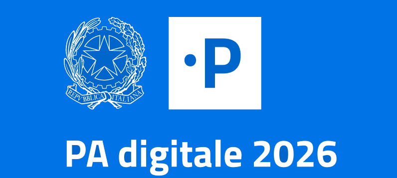
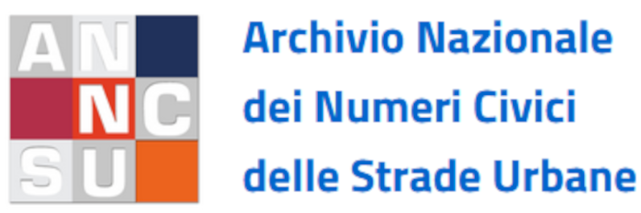
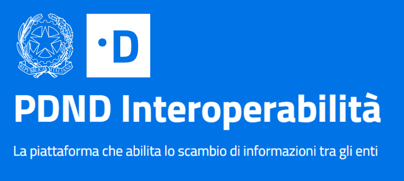

Crea il tuo progetto QGIS
Usa dati su GeoDB o file system
Pubblica su WebGis
Personalizza contenuti del portale di accesso e del client cartografico
Crea ambienti gestionali e definisci i relativi amministratori
Attiva i moduli funzionali di interesse
Editing geometrico e degli attributi anche su relazioni 1:1 e 1:N
Editing basato sulle API di QGIS
Form ed widget di editing ereditati da progetto QGIS
Feature lock per l’editing multi utente
Vincoli geografici ed alfanumerici personalizzabili per i singoli utenti


Definisci utenti, gruppi e ruoli per differenziare gestione, accesso, editing on line e uso dei moduli funzionali
Integrazione con le API di QGIS
Ricerche personalizzabili
Layout di stampa standard o basati su atlanti geografici
Visualizzazione grafici basati sul plugin DataPlotly
Time series e grafici temporali
Servizio CSW per la metadatazione (RNDT e INSPIRE)
Client repsonisve per la consultazione desktop e tablet
Editing su web anche in modalità off line




G3W-Suite è una soluzione ideata per semplificare la pubblicazione e la gestione di servizi WebGis da parte di qualsiasi tipologia di utente e per le più disparate necessità.
L’infrastruttura permette di pubblicare direttamente i progetti cartografici realizzati con il software OS QGIS mantenendo le caratteristiche grafiche e informative ad esso associate.
Il pannello di Amministrazione permette di gestire permessi di accesso ed attivare moduli funzionali in base alle proprie esigenze.
La funzione di editing su web permette di trasformare i tuoi progetti QGIS in gestionali cartografici web.
Crea il tuo progetto cartografico utilizzando i tuoi dati geografici
Caratterizza il progetto definendo struttura del progetto, join e relazioni 1:N, form e widget di editing, grafici interattivi (DataPlotly), layout di stampa e qualsiasi altro aspetto grafico e funzionale
Carica ed aggiorna i tuoi dati nel formato che preferisci (SpatiaLite, GeoPackage, Shapefile, Virtual layer…)
Utilizza dati su GeoDatabase PostGreSQL/PostGis, Oracle Spatial e MSSLQ
Accedi al tuo portale web dedicato per pubblicare i tuoi progetti come servizi WebGis
Gestisci autonomamente i tuoi progetti definendo utenti, permessi e vincoli di editing, grafici interattivi, metodi di ricerca e attivando le funzionalità più utili per il tuo gestionale


Strumenti di ricerca geografica e funzioni di auto-zoom
Carte di base (OSM, GoogleMaps, Yahoo, Bing…)
Stampa basata sui layout composer (con supporto degli Atlanti) associati al progetto QGIS
Pubblicazione Metadati definiti su progetto QGIS
Query Builder per ricerche personalizzate
Visualizzazione dati basati su join e relazioni 1:N e N:M
Visualizzazione grafici realizzati con il plugin di QGIS DataPlotly
Collegamenti a link web e a contenuti multimediali
Caricamento on-the-fly di strati vettoriali (.shp, .kml, .geojson, csv…)
Possibilità di creare contenitori cartografici tematici per la gestione strutturata dei servizi WebGis
Pubblicazione diretta e completa corrispondenza grafica con i progetti QGIS
Costruzione grafica di ricerche attivabili sui singoli servizi
Gestione cache e creazione base layer da servizi WebGis
Usa dati sui tuoi DB PostGreSQL/PostGis, Oracle Spatial o MSSQL
..ma anche SQLite/SpatiaLite, GeoPackage, Shapefile, Virtual layer e i tuoi dati raster…
Creazione utenti (singoli e gruppi) e gestioni permessi di accesso
Gestione permessi di editing on-line sui singoli strati
Vincoli alfanumerici basati su SQL ed espressioni QGIS per la creazione di filtri di visualizzazione ed editing
Vincoli geografici per la creazione di filtri di visualizzazione ed editing
Collegamento censuario catasto e verifiche tributarie
CDU e normative associate
Gestione civici e stradario
Metadatazione RNDT e INSPIRE
Hai necessità di supporto per l’installazione in house o come servizio in cloud?
Necessiti di supporto operativo e formazione ?
Sei interessato allo sviluppo di moduli specifici per le tue esigenze?